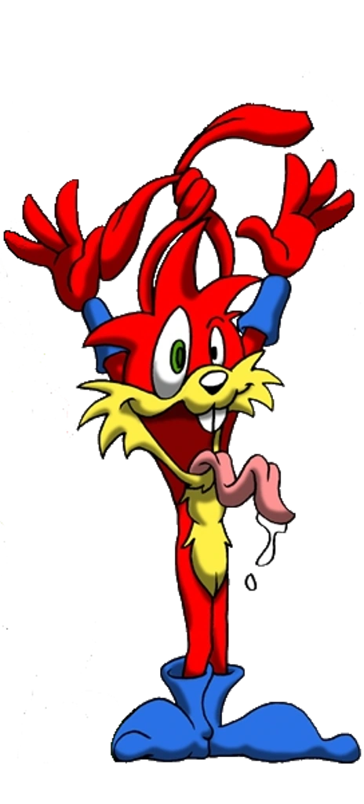
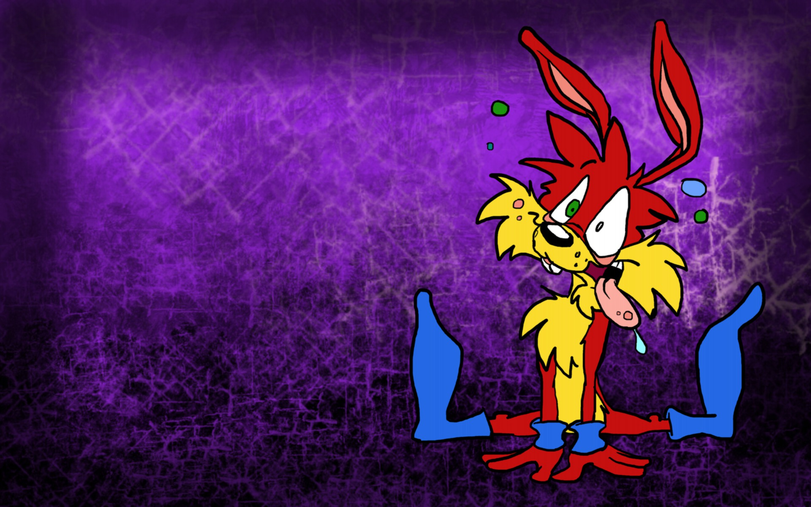

TRAMA
PERSONAGGI
EPISODI
DINAMICHE
SPAZ

Spaz è il fratello di Jazz. Riconosciuto per le sue burle e i suoi continui scherzi fatti al fratello, Spaz viene implementato da questo capitolo del gioco. La caratteristica principale di questo personaggio, oltre quella di ridere a crepapelle ad ogni battuta e lamentarsi in continuazione, è quella di correre alla velocità della luce.
Nella lore di “Jazz Jackrabbit”, Spaz è un personaggio comico (o comic relief) che ha un suo momento di realizzazione esclusivamente nel finale di questo capitolo, dove avrà la meglio corteggiando una timida coniglietta durante il matrimonio tra Jazz ed Eva.
